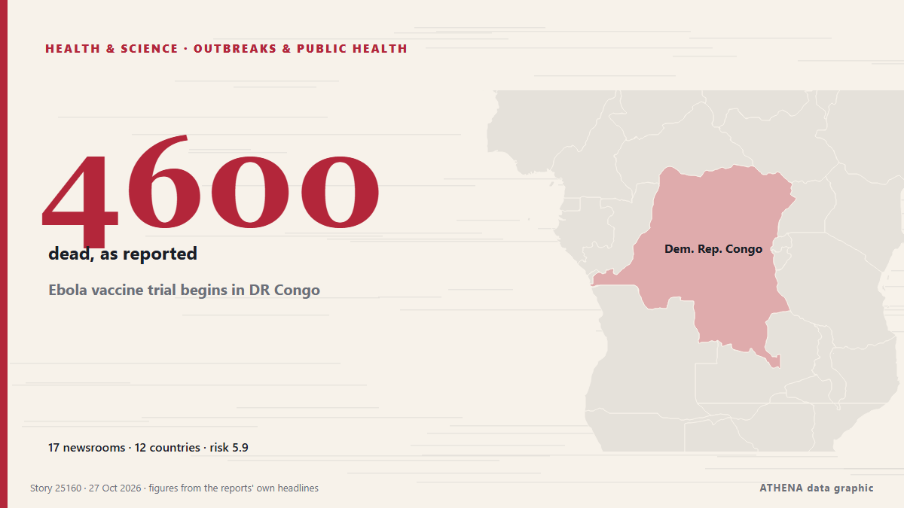

Ebola vaccine trial begins in DR Congo

GENEVA, Switzerland (AFP)—The first clinical trial of an Ebola vaccine in the outbreak gripping the Democratic Republic of Congo began Friday, the head of the World Health Organization said. από Jamaica Observer
Αναφέρθηκε ανεξάρτητα από 17 μέσα σε 12 χώρες από τις 19 Οκτ, πρώτο το ECDC news· η κάλυψη έχει ηρεμήσει. Το ATHENA εκτιμά τον κίνδυνο αυξημένο (5.9/10), κυρίως λόγω της σοβαρότητάς του και της εμβέλειάς του. Βεβαιότητα 93% (υψηλή): το επιβεβαιώνουν 17 ανεξάρτητα μέσα, μέση αξιοπιστία 77%. Μέσα ανά χώρα: Νιγηρία (7), Τουρκία (2), Σουηδία (1). Κάλυψη: 19 Οκτ έως 27 Οκτ, 192 ώρες.
Γιατί έχει σημασία: Οι εξελίξεις στην υγεία και την επιστήμη μπορούν να αλλάξουν τους κινδύνους δημόσιας υγείας, τις ερευνητικές προτεραιότητες και τη ρύθμιση.
Τι άλλαξε: 3 νέες αναφορές από 3 μέσα στο 24ωρο έως 27 Οκτ.
Οι τίτλοι των ειδήσεων παρουσιάζονται στα αγγλικά, όπως δημοσιεύτηκαν.
Με μια ματιά
Επιλέγεται, βαθμολογείται και γράφεται από τη δημοσιευμένη μεθοδολογία του ATHENA. Κανένας συντάκτης δεν παρεμβαίνει σε μεμονωμένα γεγονότα. Πώς παράγεται ›
| 19 Oct 15:36 UTC | 1 |
|---|---|
| 20 Oct 03:36 UTC | 0 |
| 20 Oct 15:36 UTC | 0 |
| 21 Oct 03:36 UTC | 0 |
| 21 Oct 15:36 UTC | 0 |
| 22 Oct 03:36 UTC | 0 |
| 22 Oct 15:36 UTC | 0 |
| 23 Oct 03:36 UTC | 2 |
| 23 Oct 15:36 UTC | 7 |
| 24 Oct 03:36 UTC | 6 |
| 24 Oct 15:36 UTC | 0 |
| 25 Oct 03:36 UTC | 0 |
| 25 Oct 15:36 UTC | 0 |
| 26 Oct 03:36 UTC | 0 |
| 26 Oct 15:36 UTC | 0 |
| 27 Oct 03:36 UTC | 2 |
| 27 Oct 15:36 UTC | 1 |
| 23 Oct 15:07 UTC | 3.9 |
|---|---|
| 23 Oct 15:18 UTC | 4.6 |
| 24 Oct 12:55 UTC | 6.7 |
| 25 Oct 03:09 UTC | 6.0 |
| 27 Oct 15:45 UTC | 5.9 |
Γιατί αυτοί οι αριθμοί
Σημασία
Κίνδυνος
Βεβαιότητα
Η κάλυψη — ποιος το ανέφερε και πότε
ο τίτλος όπως δημοσιεύτηκε · ανοίγει το πρωτότυπο- ECDC news · ΣουηδίαEbola disease: Multi-country outbreak 2026
- News Agency of Nigeria · ΝιγηρίαDRC begins trial of vaccine candidates against Bundibugyo Ebola virus – CEPI
- News Agency of Nigeria · ΝιγηρίαFirst participant vaccinated in Bundibugyo vaccine trial in DRC
- Premium Times · ΝιγηρίαDRC begins new vaccine trial as outbreak kills over 4,600
- Channels TV · ΝιγηρίαEbola Vaccine Trial Begins In DR Congo – WHO Chief
- The Straits Times · ΣιγκαπούρηEbola vaccine trial begins in Democratic Republic of Congo
- Al Jazeera English · ΚατάρWHO announces start of Ebola vaccine clinical trial in DR Congo
- Jamaica Observer · ΤζαμάικαEbola vaccine trial begins in DR Congo
- Vanguard · ΝιγηρίαEbola vaccine trial begins in DR Congo
- Anadolu Agency (English) · ΤουρκίαNew Ebola vaccine trial launched in DR Congo
- CGTN (World) · ΚίναMajor trial for new Ebola vaccine begins in DR Congo amid outbreak
- Punch · ΝιγηρίαWHO begins Ebola vaccine trial in DR Congo
- Vanguard · ΝιγηρίαEbola vaccine trial begins in DR Congo
- Africanews (English) · AFRNew Tumaini Ebola vaccine trial launches in Bunia as DRC struggles
- Kurdistan24 (English) · ΙράκWHO Launches First Ebola Vaccine Trial in Congo’s Bunia
- The Rio Times · ΒραζιλίαCongo’s Ebola Vaccine Trial in Bunia Explained
- DW English · ΓερμανίαDR Congo reports over 10,000 Ebola cases as the outbreak spreads abroad, with no approved vaccine or specific treatment for the Bundibugyo virus
- Anadolu Agency (English) · Τουρκία1st 4 participants vaccinated in DRC trial testing Ebola jab's effectiveness against Bundibugyo virus: WHO
- France 24 English · ΓαλλίαAfrica's Ebola outbreak tops 10,000 cases, mainly in DR Congo